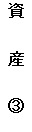
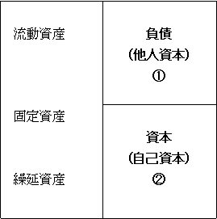

第４回 会社の体力 その２
前回は、会社の体力とはどのようなものをさすのか、その目安として自己資本と他人資本のバランスについて説明しました。しかし会社の体力とは、結局は手持ち資金の不足を未然に防ぐ資金力のことであって、自己資本の割合の大小だけでは正確に測ることはできません。大切なのはどちらかというと、総資本でまかなわれている、資産の内容です。そこで今回は、体力ある会社とはどのような資産内容であるべきかについて、考えてみることにしましょう。
1. 財務諸表
会社が「つぶれる」とは、結局は「銭足らず」の状態に陥ることであると説明しました。これは、売上不振や円高による輸出不振、売掛回収難などさまざまな理由に起因します。特に不況は「つぶれる」大きな要因の一つと考えられています。しかし同業種、同規模の会社でも、「つぶれる」会社と「つぶれない」会社があることも事実です。つまり会社を、不況や円高といった経済動向や業界不振という理由で「つぶれる」かもしれないと予測することには無理があるのです。各会社の経営者が異なるように、そこから導き出される経営方針も異なってくるわけですから、不況や業界不振への対応の仕方も、おのずと各社異なってくるわけです。したがって我々が客観的な判断を下すためには、「銭足らず」に陥る兆候を各社の個別の会計数値（貸借対照表、損益計算書などの財務諸表上の数値）から読み取ることが、最も適切な方法であるといえます。
また取引先の財務諸表（決算書）は、なかなか入手しにくいものです。取引先が上場企業であれば政府刊行物センターまた証券取引所にて公表財務諸表を入手することが可能ですが、それ以外ですと、場合によっては一切財務諸表を入手できない場合もあります。さらには、もし情報産業会社（帝国データバンク、東京商工リサーチ）などから財務諸表を入手できたとしても、非上場または商法で定める大会社（資本金5億円以上、負債合計200億円以上の株式会社）に該当しない会社の場合は、公認会計士などによる会計監査が義務づけられていないため、財務諸表自体に信憑性がないともいえます。しかし、例えその内容が保証されていないとしても、それを知りつつ上手に利用するのも一つの方法です。大切なことは、取引先については必ず財務諸表を入手する努力を払うべきであるということなのです。
2. 当座資産
会社の資産は、総資本でまかわれています。図-1で見ると右側（貸方）が総資本を現わし（①＋②）、左側（借方）が総資産（③）を現わしています。つまり「右側に記載されているお金の合計金額で、左側に記載されている物を購入した（または取替えた）」ということを意味しています。したがって右側にある項目は結局全て左側にある項目に「化けている」わけです。
通常の貸借対照表を見ると、左側の資産項目の上から、流動資産、固定資産、繰延資産という大きなくくりに分けて記載されています。これらは、流動性（現金化の容易なこと）の高い順番にならんでいます。すぐに現金化できる金額が、すぐに支払わなければならない金額より上回っていれば、「銭足らず」に陥ることはありません。したがってまずは、この流動性の高い項目の中でも、さらに現金化が容易な項目を把握できれば、短期の資金力をある程度は測ることができるわけです。実は流動資産とは、「１年以内に現金化または費消される資産」のことを表しており、必ずしもすぐに現金化できるものばかりではありません。そこでより現金に近いもの（現金または現金等価物）を当座資産と呼んでおり、それには現金、預金、受取手形、売掛金、有価証券などが含まれます。当座資産はある意味では、その瞬間における真の資金調達能力を表します。したがって流動資産合計額に占める当座資産の割合の高い会社、または総資産に占める当座資産の割合の高い会社はかなり安定的な会社であるといえるでしょう。
３ 収支適合性
取引先の財務諸表は、毎年決算時に入手できれば良い方です。場合によっては２年に１度ということもあるかもしれません。まして、毎月のように取引先の会計数値を入手することなど論外です。そこで、年１回しか作成されない決算書から、「銭足らず」に陥らないための支払い能力や資金力を読み取ることが求められてくるのです。したがってこの場合は当座資産の割合はあまり有効ではなくなります（年の間にいくらでも、この割合は変化してしまうからです）。
決算書からその後１年間の（次の決算書が作成されるまでの）支払い能力を測ろうとすることは、あまりにも無謀過ぎるかもしれません。通常決算書を利用した分析の場合、流動資産の額を、流動負債（１年以内に支払い期限の到来する負債）の額と比較することで、いわゆる収支適合性（入ってくるお金の額と出ていくお金の額の適合性）を明らかします。しかし、これでは年の途中で収支不適合になることがあるとしても、その事実には目をつぶり、とにかく１年間を通して入ってくる分と出ていく分が適合していれば問題ないということになってしまいます。しかも、現行の財務諸表からは月毎のお金の流れを読み取ることはできません。無論会社側では、全ての状況を把握していますが、現行の企業会計原則に準拠した財務諸表では、そこまで開示することは義務づけられていないのです。したがって、より相手先の収支適合性を信頼できるものとするためのには、さらなる補完情報が必要となります。では、財務諸表という限られた情報の中で、どのような情報に注目すれば、より信頼性を向上させることができるのでしょうか。「今年は銭足らずにならないようだ」という判断を下すためには、さらなる情報が必要です。次回は、収支適合性をより信頼あるものとするための情報を、財務諸表の中から選びだしてみることにしましょう。

図１ 貸借対照表
図-1 貸借対照表